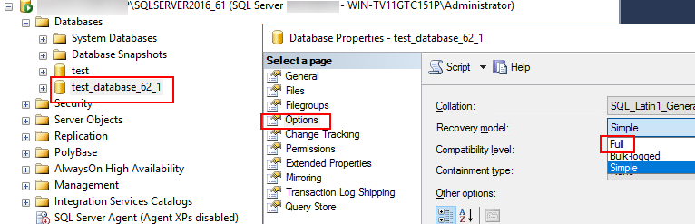

Before backing up SQL Server logs, set Recovery model to Full. Otherwise, the log backup fails.
Procedure
- Log in to the SQL Server database host.
- Log in to the Microsoft SQL Server Management Studio management page as a database administrator.
- Set Recovery model to Full for the database. The test_database_62_1 database is used as an example.

Copyright © Huawei Technologies Co., Ltd.